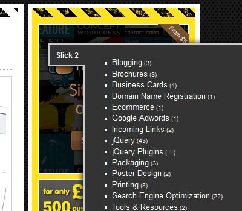

jQuery Demo: Create A jQuery Menu Slider
Mega Menu
Vertical Mega Menu
Vertical Accordion Menu
jQuery Drill Down iPod Menu
jQuery Slick Menu
Floating Menu
Floating Tweets
Slick Contact Forms
Slick Social Share Buttons
jQuery Horizontal Mega Menu
jQuery Vertical Mega Menu
jQuery Vertical Accordion Menu
jQuery Drill Down iPod Menu

jQuery Slick Menu
Floating Menu Widget
Floating Tweets Widget
Slick Contact Forms
Slick Social Share Buttons